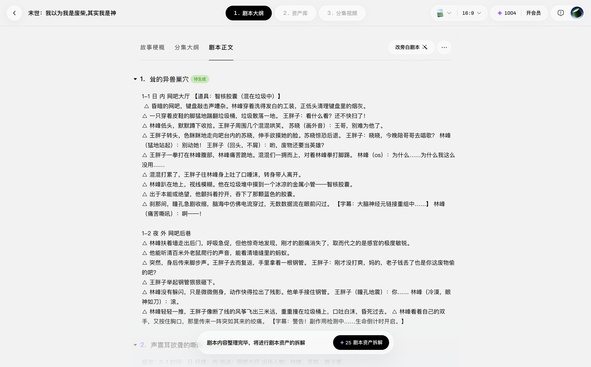
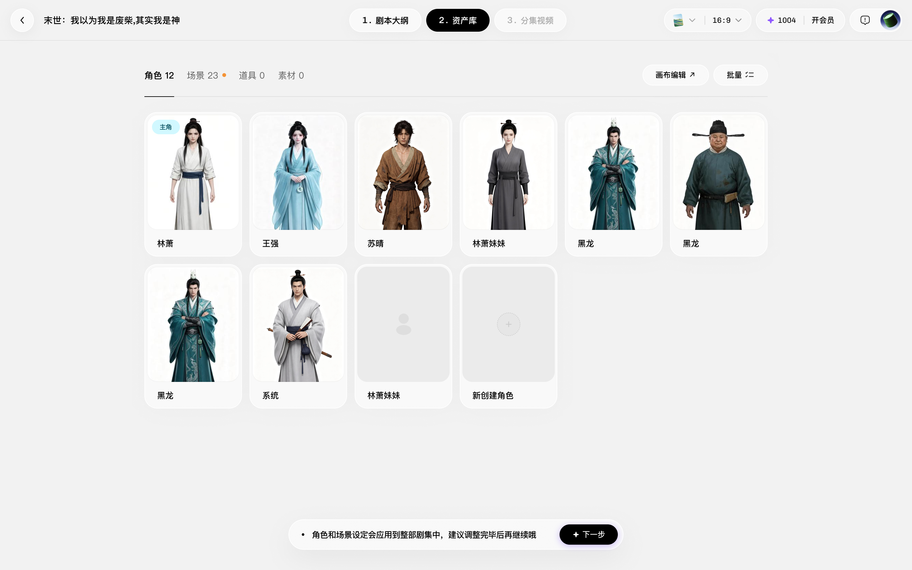
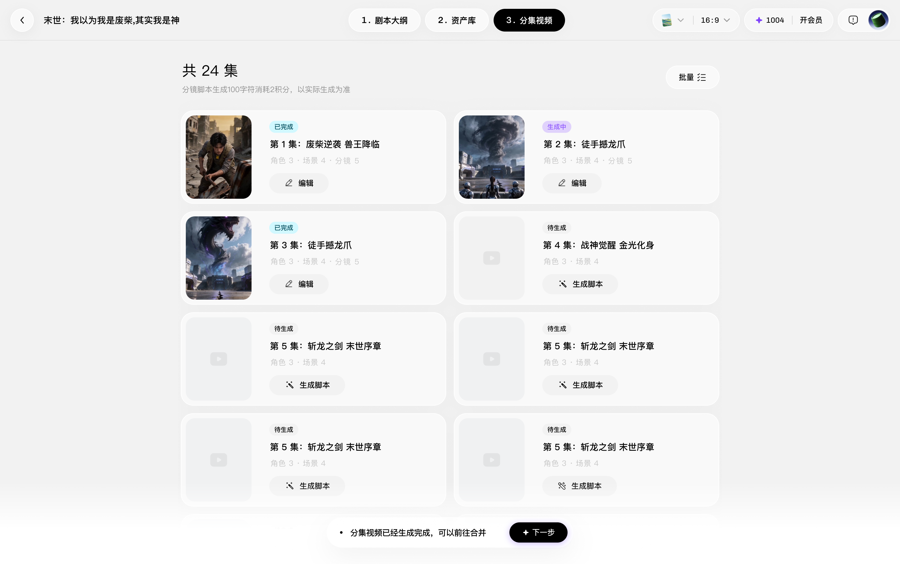
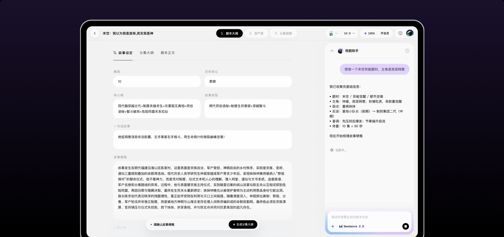

什么是小云雀
小云雀是一款对话式 AI 短剧创作工具，通过引导共创与可控编辑，帮助创作者将故事灵感逐步转化为完整短剧



Pippit UX ProjectWeb Design

从一句话灵感到可控剧本，让 AI 在生成前理解用户真正想要什么。我的角色：基于既有需求完成页面实现；参与剧本对话链路的体验诊断与交互优化。部分优化已同步线上，其余为基于真实场景的个人体验延展
小云雀是一款对话式 AI 短剧创作工具，通过引导共创与可控编辑，帮助创作者将故事灵感逐步转化为完整短剧



小云雀从早期希望建立高质量短剧工作流，到现在希望让 AI 创作更加自由可控
小云雀正在从不止帮助用户快速开始，更让用户能够表达意图、校正过程，并持续掌控最终产出
目前短剧 Agent 采用纯工作流模式，用户一次性提交需求后只能查看最终结果；2.0 增加了编辑能力，但仍依赖手动修改，效率较低
在创作过程中用户需求不同，我们分别对不同的创作者进行了详细调研
在剧本生成阶段，单一的 AI 生成无法承接不同用户后续对于剧本创作与修改的需求
根据用户的创作经验与任务阶段切换协作方式：为新手提供引导式共创，为专业创作者提供可控式辅助
对没有完整想法的用户，降低启动成本，而不是增加提问负担
通过回显用户输入并梳理人物、冲突与剧情等关键信息，帮助用户确认 AI 的理解，减少后续生成偏差
根据生成与修改的影响程度逐级增强确认，从轻量提醒、显式确认到最终定稿，持续对齐 AI 与用户的创作意图
从整篇重生成，转向有影响范围的定向修改，让用户感知我何处进行了修改
在整个生成过程中，我们希望给用户更明确的反馈
在基础生成能力上，为增加用户对整体剧本的可控性，我们增加了历史记录，用户可以随时回溯
在完成设计上线之后，我们查看了具体的线上数据
实验组剧本采纳率达到 38%
对照组剧本采纳率为 27%
在海外剧本效果横评中，产品生成的剧本在主观质量和实际可用性方面均优于竞品